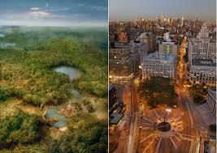

Nueva York
Nueva York (en inglés: New York City) es la ciudad más poblada de los Estados Unidos y una de las más pobladas del mundo.7 Desde finales del siglo XIX es uno de los centros de la economía mundial. Nueva York está considerada como una ciudad global, por sus influencias a nivel mundial en los medios de comunicación, en la política, en la educación, en la arquitectura, en el entretenimiento, las artes y la moda
